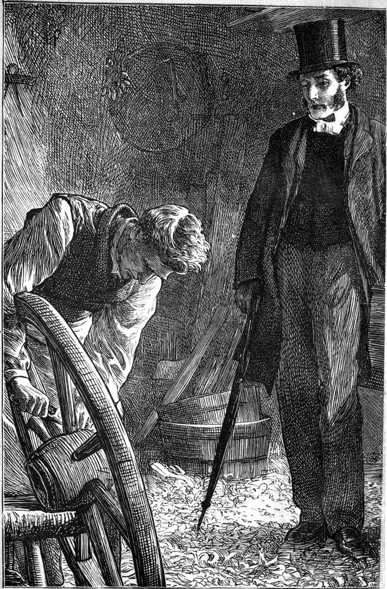

Before I begin to tell you some of the things I have seen and heard, in both of which I have had to take a share, now from the compulsion of my office, now from the leading of my own heart, and now from that destiny which, including both, so often throws the man who supposed himself a mere on-looker, into the very vortex of events—that destiny which took form to the old pagans as a gray mist high beyond the heads of their gods, but to us is known as an infinite love, revealed in the mystery of man—I say before I begin, it is fitting that, in the absence of a common friend to do that office for me, I should introduce myself to your acquaintance, and I hope coming friendship. Nor can there be any impropriety in my telling you about myself, seeing I remain concealed behind my own words. You can never look me in the eyes, though you may look me in the soul. You may find me out, find my faults, my vanities, my sins, but you will not SEE me, at least in this world. To you I am but a voice of revealing, not a form of vision; therefore I am bold behind the mask, to speak to you heart to heart; bold, I say, just so much the more that I do not speak to you face to face. And when we meet in heaven—well, there I know there is no hiding; there, there is no reason for hiding anything; there, the whole desire will be alternate revelation and vision.
I am now getting old—faster and faster. I cannot help my gray hairs, nor the wrinkles that gather so slowly yet ruthlessly; no, nor the quaver that will come in my voice, not the sense of being feeble in the knees, even when I walk only across the floor of my study. But I have not got used to age yet. I do not FEEL one atom older than I did at three-and-twenty. Nay, to tell all the truth, I feel a good deal younger.—For then I only felt that a man had to take up his cross; whereas now I feel that a man has to follow Him; and that makes an unspeakable difference.—When my voice quavers, I feel that it is mine and not mine; that it just belongs to me like my watch, which does not go well-now, though it went well thirty years ago—not more than a minute out in a month. And when I feel my knees shake, I think of them with a kind of pity, as I used to think of an old mare of my father’s of which I was very fond when I was a lad, and which bore me across many a field and over many a fence, but which at last came to have the same weakness in her knees that I have in mine; and she knew it too, and took care of them, and so of herself, in a wise equine fashion. These things are not me—or I, if the grammarians like it better, (I always feel a strife between doing as the scholar does and doing as other people do;) they are not me, I say; I HAVE them—and, please God, shall soon have better. For it is not a pleasant thing for a young man, or a young woman either, I venture to say, to have an old voice, and a wrinkled face, and weak knees, and gray hair, or no hair at all. And if any moral Philistine, as our queer German brothers over the Northern fish-pond would call him, say that this is all rubbish, for that we ARE old, I would answer: “Of all children how can the children of God be old?”
So little do I give in to calling this outside of me, ME, that I should not mind presenting a minute description of my own person such as would at once clear me from any suspicion of vanity in so introducing myself. Not that my honesty would result in the least from indifference to the external—but from comparative indifference to the transitional; not to the transitional in itself, which is of eternal significance and result, but to the particular form of imperfection which it may have reached at any individual moment of its infinite progression towards the complete. For no sooner have I spoken the word NOW, than that NOW is dead and another is dying; nay, in such a regard, there is no NOW—only a past of which we know a little, and a future of which we know far less and far more. But I will not speak at all of this body of my earthly tabernacle, for it is on the whole more pleasant to forget all about it. And besides, I do not want to set any of my readers to whom I would have the pleasure of speaking far more openly and cordially than if they were seated on the other side of my writing-table—I do not want to set them wondering whether the vicar be this vicar or that vicar; or indeed to run the risk of giving the offence I might give, if I were anything else than “a wandering voice.”
I did not feel as I feel now when first I came to this parish. For, as I have said, I am now getting old very fast. True, I was thirty when I was made a vicar, an age at which a man might be expected to be beginning to grow wise; but even then I had much yet to learn.
I well remember the first evening on which I wandered out from the vicarage to take a look about me—to find out, in short, where I was, and what aspect the sky and earth here presented. Strangely enough, I had never been here before; for the presentation had been made me while I was abroad.—I was depressed. It was depressing weather. Grave doubts as to whether I was in my place in the church, would keep rising and floating about, like rain-clouds within me. Not that I doubted about the church; I only doubted about myself. “Were my motives pure?” “What were my motives?” And, to tell the truth, I did not know what my motives were, and therefore I could not answer about the purity of them. Perhaps seeing we are in this world in order to become pure, it would be expecting too much of any young man that he should be absolutely certain that he was pure in anything. But the question followed very naturally: “Had I then any right to be in the Church—to be eating her bread and drinking her wine without knowing whether I was fit to do her work?” To which the only answer I could find was, “The Church is part of God’s world. He makes men to work; and work of some sort must be done by every honest man. Somehow or other, I hardly know how, I find myself in the Church. I do not know that I am fitter for any other work. I see no other work to do. There is work here which I can do after some fashion. With God’s help I will try to do it well.”
This resolution brought me some relief, but still I was depressed. It was depressing weather.—I may as well say that I was not married then, and that I firmly believed I never should be married—not from any ambition taking the form of self-denial; nor yet from any notion that God takes pleasure in being a hard master; but there was a lady—Well, I WILL be honest, as I would be.—I had been refused a few months before, which I think was the best thing ever happened to me except one. That one, of course, was when I was accepted. But this is not much to the purpose now. Only it was depressing weather.
For is it not depressing when the rain is falling, and the steam of it is rising? when the river is crawling along muddily, and the horses stand stock-still in the meadows with their spines in a straight line from the ears to where they fail utterly in the tails? I should only put on goloshes now, and think of the days when I despised damp. Ah! it was mental waterproof that I needed then; for let me despise damp as much as I would, I could neither keep it out of my mind, nor help suffering the spiritual rheumatism which it occasioned. Now, the damp never gets farther than my goloshes and my Macintosh. And for that worst kind of rheumatism—I never feel it now.
But I had begun to tell you about that first evening.—I had arrived at the vicarage the night before, and it had rained all day, and was still raining, though not so much. I took my umbrella and went out.
For as I wanted to do my work well (everything taking far more the shape of work to me, then, and duty, than it does now—though, even now, I must confess things have occasionally to be done by the clergyman because there is no one else to do them, and hardly from other motive than a sense of duty,—a man not being able to shirk work because it may happen to be dirty)—I say, as I wanted to do my work well, or rather, perhaps, because I dreaded drudgery as much as any poor fellow who comes to the treadmill in consequence—I wanted to interest myself in it; and therefore I would go and fall in love, first of all, if I could, with the country round about. And my first step beyond my own gate was up to the ankles, in mud.
Therewith, curiously enough, arose the distracting thought how I could possibly preach TWO good sermons a Sunday to the same people, when one of the sermons was in the afternoon instead of the evening, to which latter I had been accustomed in the large town in which I had formerly officiated as curate in a proprietary chapel. I, who had declaimed indignantly against excitement from without, who had been inclined to exalt the intellect at the expense even of the heart, began to fear that there must be something in the darkness, and the gas-lights, and the crowd of faces, to account for a man’s being able to preach a better sermon, and for servant girls preferring to go out in the evening. Alas! I had now to preach, as I might judge with all probability beforehand, to a company of rustics, of thought yet slower than of speech, unaccustomed in fact to THINK at all, and that in the sleepiest, deadest part of the day, when I could hardly think myself, and when, if the weather should be at all warm, I could not expect many of them to be awake. And what good might I look for as the result of my labour? How could I hope in these men and women to kindle that fire which, in the old days of the outpouring of the Spirit, made men live with the sense of the kingdom of heaven about them, and the expectation of something glorious at hand just outside that invisible door which lay between the worlds?
I have learned since, that perhaps I overrated the spirituality of those times, and underrated, not being myself spiritual enough to see all about me, the spirituality of these times. I think I have learned since, that the parson of a parish must be content to keep the upper windows of his mind open to the holy winds and the pure lights of heaven; and the side windows of tone, of speech, of behaviour open to the earth, to let forth upon his fellow-men the tenderness and truth which those upper influences bring forth in any region exposed to their operation. Believing in his Master, such a servant shall not make haste; shall feel no feverous desire to behold the work of his hands; shall be content to be as his Master, who waiteth long for the fruits of His earth.
But surely I am getting older than I thought; for I keep wandering away from my subject, which is this, my first walk in my new cure. My excuse is, that I want my reader to understand something of the state of my mind, and the depression under which I was labouring. He will perceive that I desired to do some work worth calling by the name of work, and that I did not see how to get hold of a beginning.
I had not gone far from my own gate before the rain ceased, though it was still gloomy enough for any amount to follow. I drew down my umbrella, and began to look about me. The stream on my left was so swollen that I could see its brown in patches through the green of the meadows along its banks. A little in front of me, the road, rising quickly, took a sharp turn to pass along an old stone bridge that spanned the water with a single fine arch, somewhat pointed; and through the arch I could see the river stretching away up through the meadows, its banks bordered with pollards. Now, pollards always made me miserable. In the first place, they look ill-used; in the next place, they look tame; in the third place, they look very ugly. I had not learned then to honour them on the ground that they yield not a jot to the adversity of their circumstances; that, if they must be pollards, they still will be trees; and what they may not do with grace, they will yet do with bounty; that, in short, their life bursts forth, despite of all that is done to repress and destroy their individuality. When you have once learned to honour anything, love is not very far off; at least that has always been my experience. But, as I have said, I had not yet learned to honour pollards, and therefore they made me more miserable than I was already.
When, having followed the road, I stood at last on the bridge, and, looking up and down the river through the misty air, saw two long rows of these pollards diminishing till they vanished in both directions, the sight of them took from me all power of enjoying the water beneath me, the green fields around me, or even the old-world beauty of the little bridge upon which I stood, although all sorts of bridges have been from very infancy a delight to me. For I am one of those who never get rid of their infantile predilections, and to have once enjoyed making a mud bridge, was to enjoy all bridges for ever.
I saw a man in a white smock-frock coming along the road beyond, but I turned my back to the road, leaned my arms on the parapet of the bridge, and stood gazing where I saw no visions, namely, at those very poplars. I heard the man’s footsteps coming up the crown of the arch, but I would not turn to greet him. I was in a selfish humour if ever I was; for surely if ever one man ought to greet another, it was upon such a comfortless afternoon. The footsteps stopped behind me, and I heard a voice:—
“I beg yer pardon, sir; but be you the new vicar?”
I turned instantly and answered, “I am. Do you want me?”
“I wanted to see yer face, sir, that was all, if ye’ll not take it amiss.”
Before me stood a tall old man with his hat in his hand, clothed as I have said, in a white smock-frock. He smoothed his short gray hair with his curved palm down over his forehead as he stood. His face was of a red brown, from much exposure to the weather. There was a certain look of roughness, without hardness, in it, which spoke of endurance rather than resistance, although he could evidently set his face as a flint. His features were large and a little coarse, but the smile that parted his lips when he spoke, shone in his gray eyes as well, and lighted up a countenance in which a man might trust.
“I wanted to see yer face, sir, if you’ll not take it amiss.”
“Certainly not,” I answered, pleased with the man’s address, as he stood square before me, looking as modest as fearless. “The sight of a man’s face is what everybody has a right to; but, for all that, I should like to know why you want to see my face.”
“Why, sir, you be the new vicar. You kindly told me so when I axed you.”
“Well, then, you’ll see my face on Sunday in church—that is, if you happen to be there.”
For, although some might think it the more dignified way, I could not take it as a matter of course that he would be at church. A man might have better reasons for staying away from church than I had for going, even though I was the parson, and it was my business. Some clergymen separate between themselves and their office to a degree which I cannot understand. To assert the dignities of my office seems to me very like exalting myself; and when I have had a twinge of conscience about it, as has happened more than once, I have then found comfort in these two texts: “The Son of man came not to be ministered unto but to minister;” and “It is enough that the servant should be as his master.” Neither have I ever been able to see the very great difference between right and wrong in a clergyman, and right and wrong in another man. All that I can pretend to have yet discovered comes to this: that what is right in another man is right in a clergyman; and what is wrong in another man is much worse in a clergyman. Here, however, is one more proof of approaching age. I do not mean the opinion, but the digression.
“Well, then,” I said, “you’ll see my face in church on Sunday, if you happen to be there.”
“Yes, sir; but you see, sir, on the bridge here, the parson is the parson like, and I’m Old Rogers; and I looks in his face, and he looks in mine, and I says to myself, ‘This is my parson.’ But o’ Sundays he’s nobody’s parson; he’s got his work to do, and it mun be done, and there’s an end on’t.”
That there was a real idea in the old man’s mind was considerably clearer than the logic by which he tried to bring it out.
“Did you know parson that’s gone, sir?” he went on.
“No,” I answered.
“Oh, sir! he wur a good parson. Many’s the time he come and sit at my son’s bedside—him that’s dead and gone, sir—for a long hour, on a Saturday night, too. And then when I see him up in the desk the next mornin’, I’d say to myself, ‘Old Rogers, that’s the same man as sat by your son’s bedside last night. Think o’ that, Old Rogers!’ But, somehow, I never did feel right sure o’ that same. He didn’t seem to have the same cut, somehow; and he didn’t talk a bit the same. And when he spoke to me after sermon, in the church-yard, I was always of a mind to go into the church again and look up to the pulpit to see if he war really out ov it; for this warn’t the same man, you see. But you’ll know all about it better than I can tell you, sir. Only I always liked parson better out o’ the pulpit, and that’s how I come to want to make you look at me, sir, instead o’ the water down there, afore I see you in the church to-morrow mornin’.”
The old man laughed a kindly laugh; but he had set me thinking, and I did not know what to say to him all at once. So after a short pause, he resumed—
“You’ll be thinking me a queer kind of a man, sir, to speak to my betters before my betters speaks to me. But mayhap you don’t know what a parson is to us poor folk that has ne’er a friend more larned than theirselves but the parson. And besides, sir, I’m an old salt,—an old man-o’-war’s man,—and I’ve been all round the world, sir; and I ha’ been in all sorts o’ company, pirates and all, sir; and I aint a bit frightened of a parson. No; I love a parson, sir. And I’ll tell you for why, sir. He’s got a good telescope, and he gits to the masthead, and he looks out. And he sings out, ‘Land ahead!’ or ‘Breakers ahead!’ and gives directions accordin’. Only I can’t always make out what he says. But when he shuts up his spyglass, and comes down the riggin’, and talks to us like one man to another, then I don’t know what I should do without the parson. Good evenin’ to you, sir, and welcome to Marshmallows.”
The pollards did not look half so dreary. The river began to glimmer a little; and the old bridge had become an interesting old bridge. The country altogether was rather nice than otherwise. I had found a friend already!—that is, a man to whom I might possibly be of some use; and that was the most precious friend I could think of in my present situation and mood. I had learned something from him too; and I resolved to try all I could to be the same man in the pulpit that I was out of it. Some may be inclined to say that I had better have formed the resolution to be the same man out of the pulpit that I was in it. But the one will go quite right with the other. Out of the pulpit I would be the same man I was in it—seeing and feeling the realities of the unseen; and in the pulpit I would be the same man I was out of it—taking facts as they are, and dealing with things as they show themselves in the world.
One other occurrence before I went home that evening, and I shall close the chapter. I hope I shall not write another so dull as this. I dare not promise, though; for this is a new kind of work to me.
Before I left the bridge,—while, in fact, I was contemplating the pollards with an eye, if not of favour, yet of diminished dismay,—the sun, which, for anything I knew of his whereabouts, either from knowledge of the country, aspect of the evening, or state of my own feelings, might have been down for an hour or two, burst his cloudy bands, and blazed out as if he had just risen from the dead, instead of being just about to sink into the grave. Do not tell me that my figure is untrue, for that the sun never sinks into the grave, else I will retort that it is just as true of the sun as of a man; for that no man sinks into the grave. He only disappears. Life IS a constant sunrise, which death cannot interrupt, any more than the night can swallow up the sun. “God is not the God of the dead, but of the living; for all live unto him.”
Well, the sun shone out gloriously. The whole sweep of the gloomy river answered him in gladness; the wet leaves of the pollards quivered and glanced; the meadows offered up their perfect green, fresh and clear out of the trouble of the rain; and away in the distance, upon a rising ground covered with trees, glittered a weathercock. What if I found afterwards that it was only on the roof of a stable? It shone, and that was enough. And when the sun had gone below the horizon, and the fields and the river were dusky once more, there it glittered still over the darkening earth, a symbol of that faith which is “the evidence of things not seen,” and it made my heart swell as at a chant from the prophet Isaiah. What matter then whether it hung over a stable-roof or a church-tower?
I stood up and wandered a little farther—off the bridge, and along the road. I had not gone far before I passed a house, out of which came a young woman leading a little boy. They came after me, the boy gazing at the red and gold and green of the sunset sky. As they passed me, the child said—
“Auntie, I think I should like to be a painter.”
“Why?” returned his companion.
“Because, then,” answered the child, “I could help God to paint the sky.”
What his aunt replied I do not know; for they were presently beyond my hearing. But I went on answering him myself all the way home. Did God care to paint the sky of an evening, that a few of His children might see it, and get just a hope, just an aspiration, out of its passing green, and gold, and purple, and red? and should I think my day’s labour lost, if it wrought no visible salvation in the earth?
But was the child’s aspiration in vain? Could I tell him God did not want his help to paint the sky? True, he could mount no scaffold against the infinite of the glowing west. But might he not with his little palette and brush, when the time came, show his brothers and sisters what he had seen there, and make them see it too? Might he not thus come, after long trying, to help God to paint this glory of vapour and light inside the minds of His children? Ah! if any man’s work is not WITH God, its results shall be burned, ruthlessly burned, because poor and bad.
“So, for my part,” I said to myself, as I walked home, “if I can put one touch of a rosy sunset into the life of any man or woman of my cure, I shall feel that I have worked with God. He is in no haste; and if I do what I may in earnest, I need not mourn if I work no great work on the earth. Let God make His sunsets: I will mottle my little fading cloud. To help the growth of a thought that struggles towards the light; to brush with gentle hand the earth-stain from the white of one snowdrop—such be my ambition! So shall I scale the rocks in front, not leave my name carved upon those behind me.”
People talk about special providences. I believe in the providences, but not in the specialty. I do not believe that God lets the thread of my affairs go for six days, and on the seventh evening takes it up for a moment. The so-called special providences are no exception to the rule—they are common to all men at all moments. But it is a fact that God’s care is more evident in some instances of it than in others to the dim and often bewildered vision of humanity. Upon such instances men seize and call them providences. It is well that they can; but it would be gloriously better if they could believe that the whole matter is one grand providence.
I was one of such men at the time, and could not fail to see what I called a special providence in this, that on my first attempt to find where I stood in the scheme of Providence, and while I was discouraged with regard to the work before me, I should fall in with these two—an old man whom I could help, and a child who could help me; the one opening an outlet for my labour and my love, and the other reminding me of the highest source of the most humbling comfort,—that in all my work I might be a fellow-worker with God.